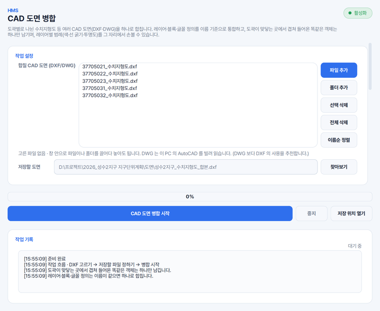

수치지형도 도곽 합치기
도곽으로 나뉘어 오는 수치지형도를 사업 구역 한 장으로 모읍니다. 도곽이 맞닿는 곳에 두 벌씩 겹쳐 들어온 똑같은 선은 하나만 남깁니다.
캐드에서 도곽을 한 장씩 열어 붙여 넣지 않고, 파일을 담아 한 번에 병합합니다. 합치기 전에 레이어마다 색 · 선 굵기 · 투명도를 손볼 수 있습니다.
파일이나 폴더를 창 안으로 끌어다 놓아도 되며, DWG 는 이 PC 의 AutoCAD 를 빌려 읽습니다.
저장할 DXF 형식을 고를 수 있고, 저장 위치를 정하지 않으시면 첫 도면 옆에 만듭니다.
도곽으로 나뉘어 오는 수치지형도를 사업 구역 한 장으로 모읍니다. 도곽이 맞닿는 곳에 두 벌씩 겹쳐 들어온 똑같은 선은 하나만 남깁니다.
DXF 와 DWG 가 섞여 있어도 한 목록에 담아 합칩니다. 열지 못한 DWG 는 그 파일만 건너뛰고 알려 드립니다.
범례 묶음에서 '모두 회색(8번)' 이나 '모두 연회색(9번)' 을 고르면 원본의 여러 색을 한 톤으로 눌러, 그 위에 계획선을 그리기 좋은 바탕도가 됩니다. 지형지물별 묶음은 건물 · 도로, 등고선, 하천을 색으로 나눕니다.
도곽선이나 색인처럼 합치지 않을 레이어는 레이어 범례 표에서 체크를 끄면 결과 도면에서 빠집니다.
[파일 추가] · [폴더 추가]로 담거나 창 안으로 끌어다 놓으면 아래에 파일 수와 합계 용량이 뜹니다.
[레이어 불러오기]를 누르면 도면의 레이어가 색과 함께 표에 뜨고, 범례 묶음을 고르거나 '사용자 정의' 로 직접 고칩니다.
저장할 DXF 형식을 고르고, 도곽 경계에서 겹친 똑같은 객체를 하나만 남길지 정합니다.
끝나면 합친 파일 수와 객체 수, 걸린 시간을 알려 드리며 [병합된 도면 열기]로 바로 엽니다.
가상의 사업지(성수2지구 지구단위계획) 자료를 넣어 찍은 화면입니다.

DXF 만 합치실 때는 없어도 됩니다. DWG 는 이 PC 의 AutoCAD 를 빌려 읽으므로 DWG 를 섞으실 때만 필요하며, 읽는 데 시간이 더 걸려 DXF 를 권합니다.
합친 결과는 DXF 파일 하나입니다. 저장 형식은 원본과 같게 두거나 AutoCAD 2000 · 2004 · 2007 · 2010 · 2013 · 2018 형식 가운데 고르실 수 있으며, 2000 형식이 호환 범위가 가장 넓습니다.
레이어 · 선종류 · 글꼴 · 블록 정의는 이름이 같으면 하나로 모읍니다. 다만 동적 블록처럼 캐드가 도면마다 같은 번호로 이름을 붙이는 블록은 도면마다 따로 가져와 제 모양을 지킵니다.
표고 숫자는 대개 국토지리정보원 전용 글꼴(ngsw.shx)로 적혀 있는데, 이 글꼴은 AutoCAD 에 들어 있지 않아 글꼴이 없는 PC 에서는 숫자가 그려지지 않습니다. 합칠 때 흔한 한글 글꼴(whgtxt.shx)로 바꿔 저장하는 옵션이 기본으로 켜져 있어 모든 도곽의 숫자가 보입니다.
솔루션을 하나씩 받지 않습니다. Solution Center 를 한 번 설치하면 그 안에서 골라 설치합니다.
파이썬 같은 실행환경까지 함께 들어 있어, 쓰시는 컴퓨터에 따로 준비하실 것이 없습니다.
소속은 회사명 · 학교명 · 기관명을 정확히 적어 주셔야 승인됩니다.
내려받기부터 설치까지 한 번에 끝납니다. 새 버전이 나오면 카드가 알려 줍니다.
쓰시다가 막히면 화면을 캡처해 카카오톡 오픈채팅이나 메일로 보내 주세요. 오류 창이 떴다면 그 창까지 함께 담아 주시면 가장 빠릅니다. 문의하는 곳은 홈페이지 문의 칸에 모아 두었습니다.
모두 같은 Solution Center 안에서 골라 설치합니다.